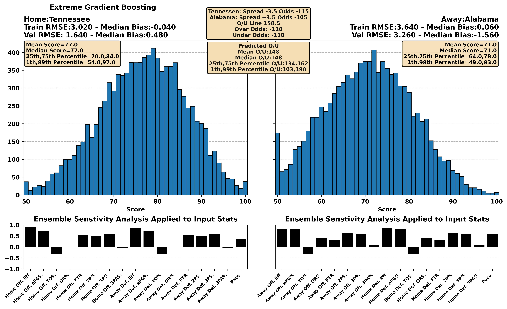
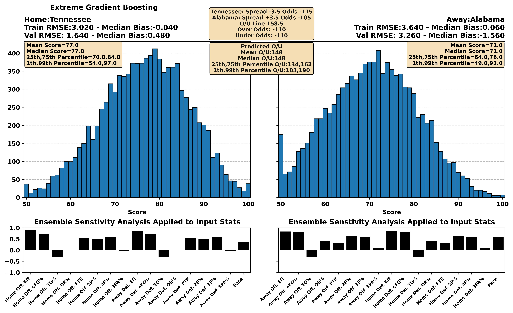
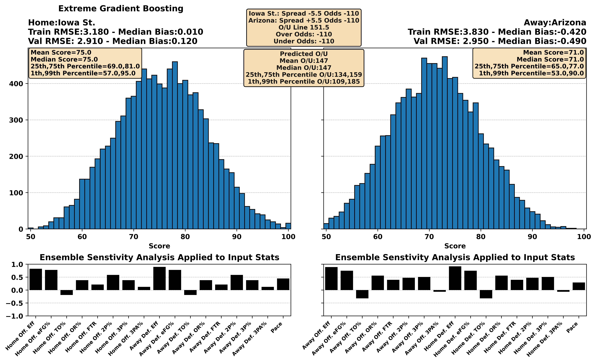
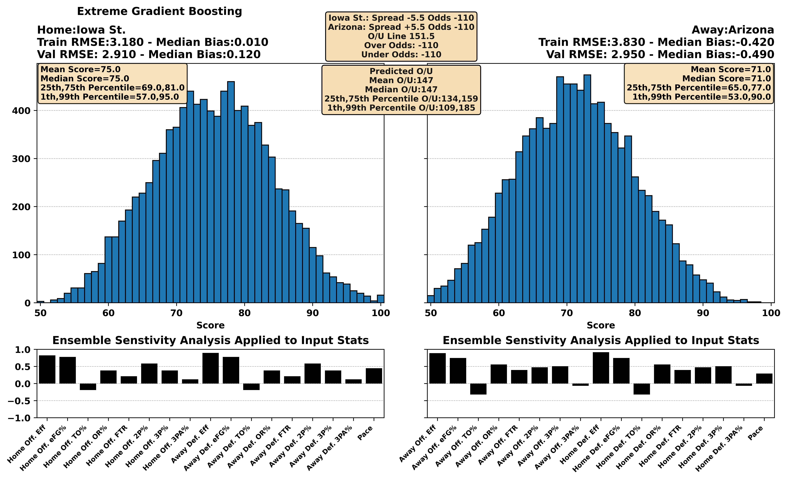
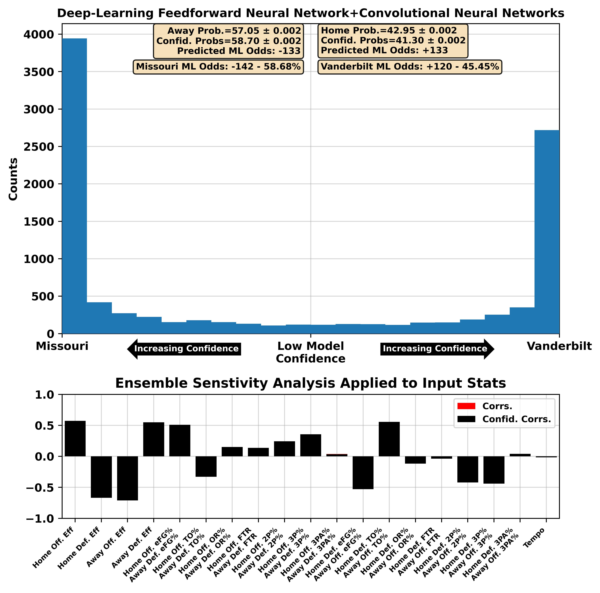
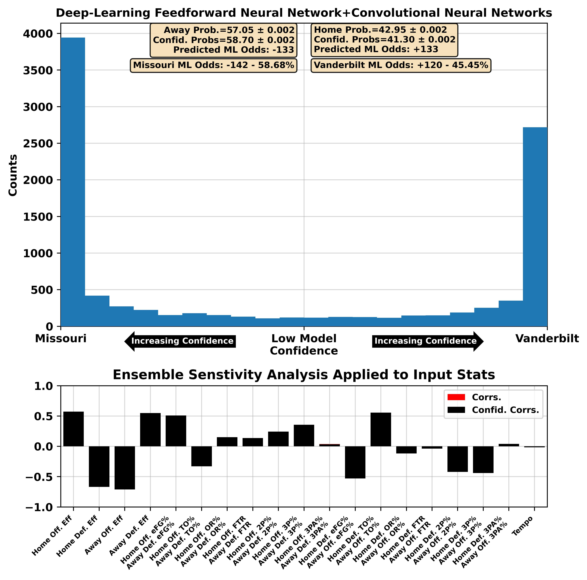
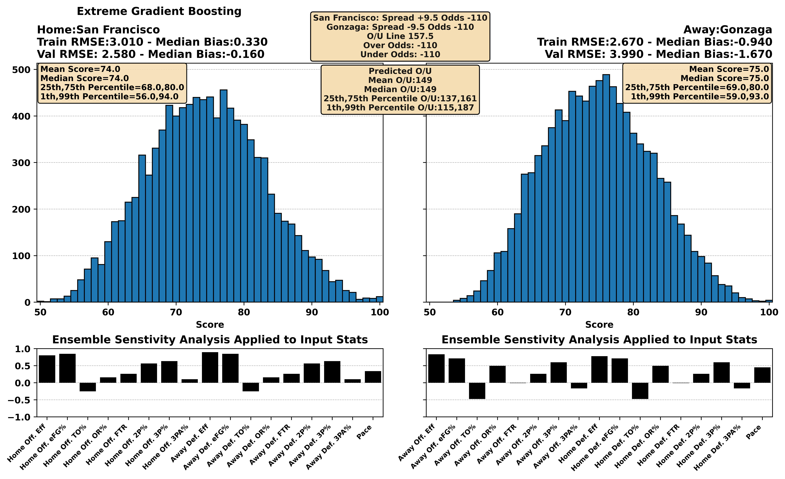
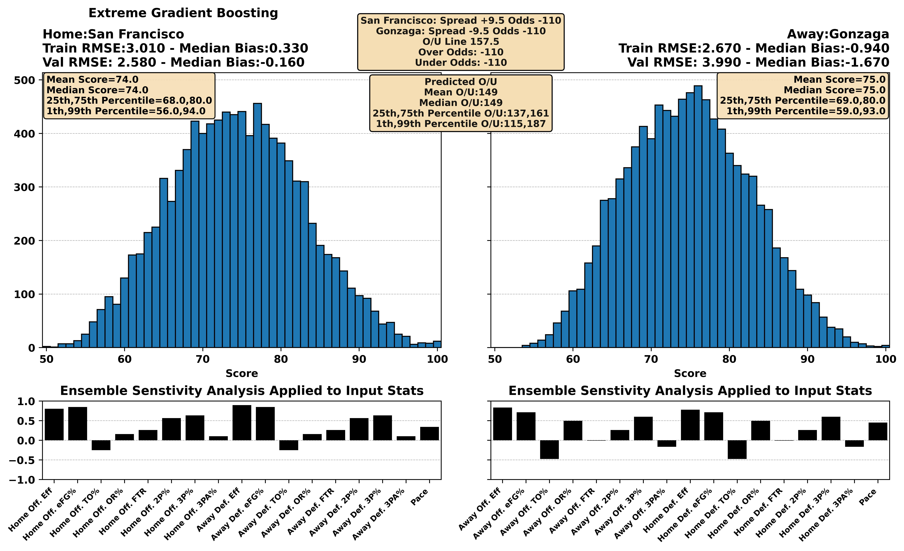

| BART Torvik Prediction | 06:00 PM 20 Kentucky at 5 Tennessee ESPN | Tennessee -8.1, 76-68 (78%) |


| BART Torvik Prediction | 08:00 PM 42 North Carolina at 46 Pittsburgh ESPN | Pittsburgh -3.7, 80-77 (63%) |


 

| BART Torvik Prediction | 08:00 PM 29 Baylor at 23 BYU ESPN2 | BYU -4.7, 74-70 (68%) |


 

| BART Torvik Prediction | 09:00 PM 54 Cincinnati at 87 Utah CBSSN | Utah -0.5, 66-65 (52%) |


| BART Torvik Prediction | 08:00 PM 61 Arizona St. at 101 Colorado ESPN+ | Arizona St. -0.8, 70-69 (53%) |
 



| BART Torvik Prediction | 07:00 PM 58 UCF at 10 Kansas ESPN+ | Kansas -12.7, 82-69 (87%) |


| BART Torvik Prediction | 07:00 PM 91 Minnesota at 14 Michigan St. Peacock | Michigan St. -13.2, 74-61 (91%) |


 
